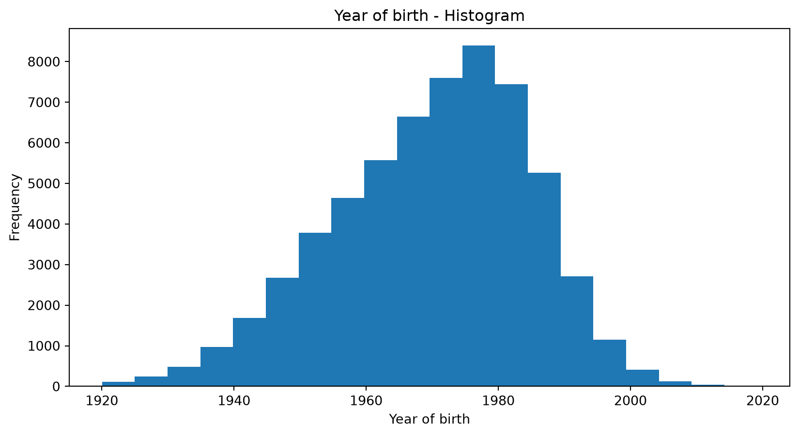
Prof. Dr. Gerit Wagner
(2026-03-23)
Before building analytical models, analysts typically engage in data preparation and exploratory data analysis (EDA).
These activities are closely intertwined and often iterative: we prepare and structure the data while simultaneously exploring it to understand its characteristics and potential issues.
Typical activities include:
Goal: develop an initial understanding of the data, detect patterns or anomalies, and ensure that the data is suitable for further analysis or modeling.
Conducting EDA and representing the “real world” requires us to use appropriate data types. Typically, we distinguish four fundamental data types, known as measurement scales:
Qualitative description of objects
Quantitative description objects
Examples:
Special case of the nominal scale: Binary scale – also called Boolean
Examples:
Values cannot be multiplied or added, even if the numbers belong to the same scale.
Relations between values:
Examples:
Examples:
Examples:
Due to the different mathematical properties, not all statistical measures can be computed on different measurement scales:
| Scale | Mathematical operations possible | Mode | Frequency | Percentiles / Median | Mean / Variance / SD |
|---|---|---|---|---|---|
| Nominal | =, ≠ | X | X | ||
| Ordinal | =, ≠, <, > | X | X | X | |
| Interval | =, ≠, <, >, linear transformation | X | (X) | X | X |
| Ratio | =, ≠, <, >, *, /, +, − | X | (X) | X | X |
(X) The frequency (relative / absolute) may be calculated for a numeric variable, but makes only sense when the number of possible values is low
Learning focus
No need to memorize the table.
Be able to explain the scales and give examples of operations that are appropriate.
In business analytics, we rarely work with carefully curated datasets. Instead, data often comes from multiple systems, processes, and teams, where it is primarily created for operational purposes rather than analysis. Because these data sources are not always standardized or under the analyst’s control, quality issues are common:
Before conducting analysis, we must ensure that the data is fit for use (Strong et al., 1997).
Typical data preparation actions
There are many ways to structure the same dataset.
Option A (wide)
| Region | Year | Sales_Q1 | Sales_Q2 | Sales_Q3 | Sales_Q4 |
|---|---|---|---|---|---|
| Europe | 2023 | 120 | 140 | 160 | 150 |
| Asia | 2023 | 100 | 110 | 120 | 130 |
Option B (long)
| Region | Year | Quarter | Sales |
|---|---|---|---|
| Europe | 2023 | Q1 | 120 |
| Europe | 2023 | Q2 | 140 |
| Europe | 2023 | Q3 | 160 |
| Europe | 2023 | Q4 | 150 |
| Asia | 2023 | Q1 | 100 |
| Asia | 2023 | Q2 | 110 |
| Asia | 2023 | Q3 | 120 |
| Asia | 2023 | Q4 | 130 |
➡ Which would you select as an input for a data analytics tool?
→ Solution: Option B, because this is what data analytics tools typically expect.
Data structure typically expected by data analytics tools
Vocabulary
Expected data structure
Dataset df (wide)
| Region | Year | Sales_Q1 | Sales_Q2 | Sales_Q3 | Sales_Q4 |
|---|---|---|---|---|---|
| Europe | 2023 | 120 | 140 | 160 | 150 |
| Asia | 2023 | 100 | 110 | 120 | 130 |
Convert wide → long
Result:
| Region | Year | Quarter | Sales |
|---|---|---|---|
| Europe | 2023 | Sales_Q1 | 120 |
| Asia | 2023 | Sales_Q1 | 100 |
| Europe | 2023 | Sales_Q2 | 140 |
| Asia | 2023 | Sales_Q2 | 110 |
| … | … | … | … |
As a last step, we need to clean the Quarter column by removing the "Sales_" prefix:
Final tidy dataset:
| Region | Year | Quarter | Sales |
|---|---|---|---|
| Europe | 2023 | Q1 | 120 |
| Europe | 2023 | Q2 | 140 |
| Europe | 2023 | Q3 | 160 |
| Europe | 2023 | Q4 | 150 |
| Asia | 2023 | Q1 | 100 |
| Asia | 2023 | Q2 | 110 |
| Asia | 2023 | Q3 | 120 |
| Asia | 2023 | Q4 | 130 |
| Data issue | Example | Data cleansing action |
|---|---|---|
| Missing values | Historical market data missing for some days | Impute values (e.g., interpolate prices), fill with mean/median, or mark as NA |
| Outdated values | Customer moved but old address still stored | Update records from CRM, external address verification service |
| Outliers / implausible values | Age = 250, salary = −5000 | Detect and remove, cap values, or replace with plausible values |
| Inconsistent formats | Dates stored as "03/01/23" and "2023-01-03" |
Standardize to a single format (e.g., ISO date YYYY-MM-DD) |
| Inconsistent units | Revenue in USD and EUR mixed in one column | Convert to common currency |
| Duplicate records | Same customer registered twice | Identify duplicates and merge records |
| Data entry errors | "Munich" vs "Munch" |
Correct spelling using reference tables |
| Sensor errors | Temperature sensor reports 9999 |
Remove invalid values or replace with interpolated measurements |
Organizations often store data in different systems (e.g., CRM, sales systems, web analytics).
Customer database (CRM)
| Customer_ID | Name | Country | |
|---|---|---|---|
| 101 | Alice | Germany | alice@example.com |
| 102 | Bob | France | bob@example.com |
| 103 | Clara | Germany | clara@example.com |
Sales transactions
| Customer_ID | Order_ID | Revenue |
|---|---|---|
| 101 | 5001 | 200 |
| 101 | 5002 | 150 |
| 103 | 5003 | 300 |
For analysis, we can integrate these datasets using the shared key Customer_ID.
This creates a combined dataset that links customer information with sales.
| Customer_ID | Name | Country | Order_ID | Revenue | |
|---|---|---|---|---|---|
| 101 | Alice | Germany | alice@example.com | 5001 | 200 |
| 101 | Alice | Germany | alice@example.com | 5002 | 150 |
| 103 | Clara | Germany | clara@example.com | 5003 | 300 |
Often, the way data is stored determines which mathematical operations are possible.
Example: timestamps stored as strings
| user_id | timestamp |
|---|---|
| 101 | “2025-03-12 14:23:05” |
| 102 | “2025-03-12 18:02:11” |
| 103 | “2025-03-13 09:15:42” |
If treated as a string, we can only perform operations such as:
= / ≠)This severely limits analysis.
Format conversions help transform raw data into representations suitable for EDA and analytical models:
| Representation | Example | Possible analysis |
|---|---|---|
| Numeric timestamp | 1741789385 | time differences, time series |
| Hour of day | 14 | activity patterns during the day |
| Day of week | Wednesday | weekday vs. weekend behavior |
| Day of year | 71 | seasonal patterns |
People are not very good at looking at a column of numbers or a whole data table and then determining important characteristics of the data. EDA techniques have been devised as an aid in this situation.
The following forms of EDA are typically distinguished:
| Univariate | Multivariate | |
| Non-graphical |
mean, median frequencies |
cross-tabs correlations |
| Graphical |
histograms dot plots |
scatter plots clustering |
How to describe data (not the data type)?
| Customer ID | Name | Year of birth | Tariff |
|---|---|---|---|
| 100216 | Kevin Meyer | 1983 | A |
| 271692 | Lars Knopp | 1963 | B |
| 892615 | Anton Albert | 1954 | C |
| 331625 | Peter Pan | 1988 | D |
| … | … | … | … |
Graphics work well for single variables, but for comparison of different variables and their distributions and later working with the data, numeric indicators are necessary
Descriptive statistics provide us with numbers describing the characteristics of a distribution
For qualitative / categorical data
For quantitative / numerical data
Basic statistical descriptions can be used to identify characteristics of the data and highlight which data values should be treated as noise or outliers.
A good way to get an impression of continuous / numeric data is the histogram.
The graph shows the range of observations on the horizontal axis, with a bar showing how many times each value occurred in the data set.

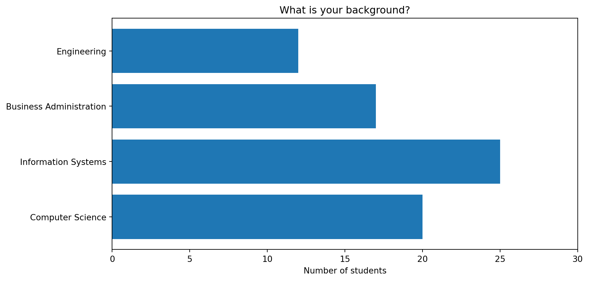
The boxplot is a condensed illustration of a distribution
It consists of
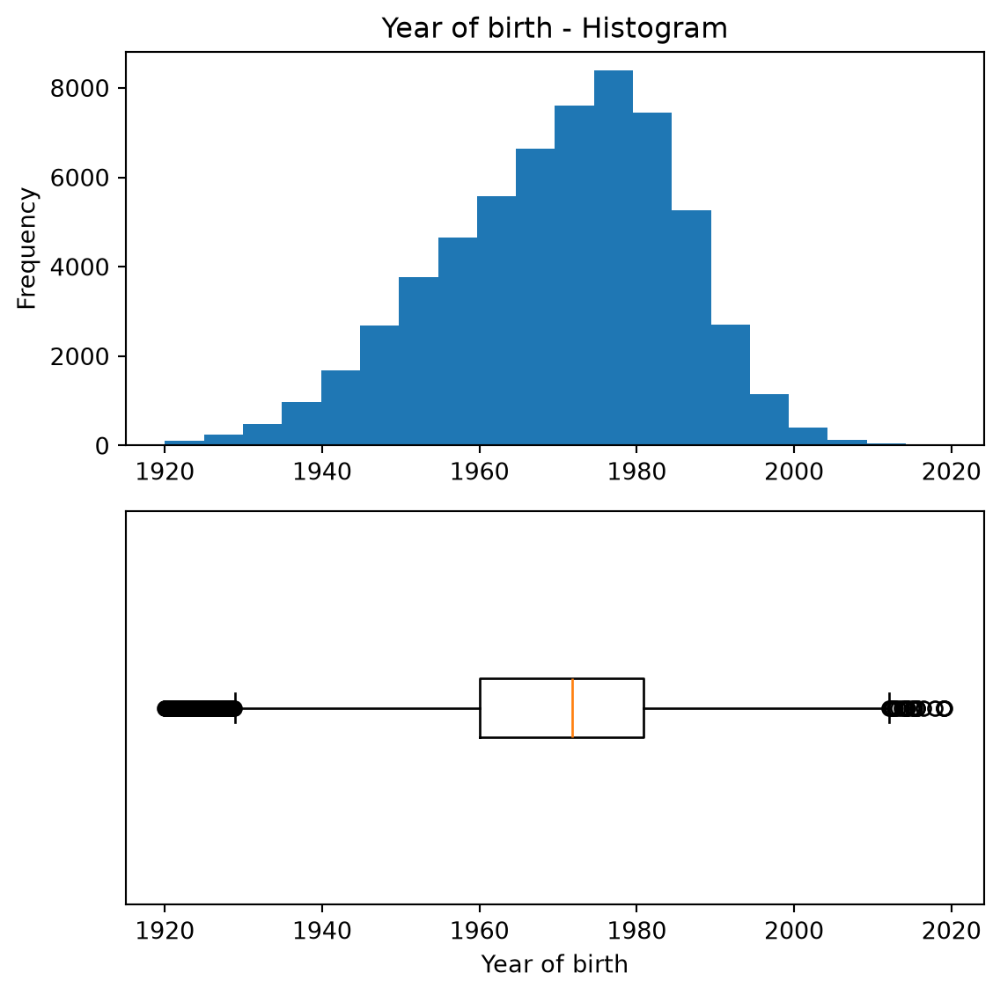
Example:
In an experiment, households received different types of feedback on their electricity consumption
The “control” group received no feedback
The plot shows boxplots of the savings in electricity consumption after three weeks with feedback
One can – for example – see that there is a higher spread in group 2A compared to the others
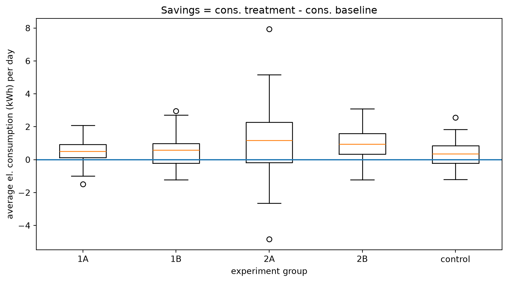
Multivariate non-graphical EDA techniques generally show the relationship between two or more variables in the form of either cross-tabulation for categorical variables or correlation statistics for numerical variables.
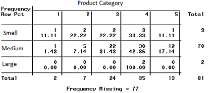
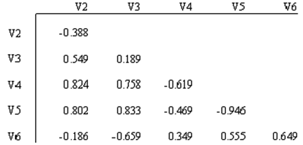
Multivariate graphical EDA techniques are scatterplots for numerical variables, Barcharts for categorical variables, or Boxplots for mixed types.
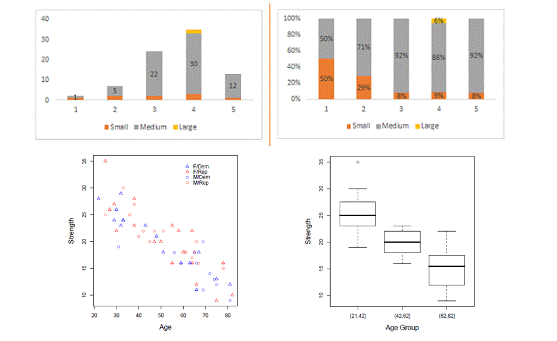
Correlation measures how strongly two variables move together. Suppose we observe two variables for the same observations:
\[X = (x_1, x_2, ..., x_n)\]
\[Y = (y_1, y_2, ..., y_n)\]
The Pearson correlation coefficient is calculated as:
\[r = \frac{\sum_{i=1}^{n}(x_i-\bar{x})(y_i-\bar{y})} {\sqrt{\sum_{i=1}^{n}(x_i-\bar{x})^2}\sqrt{\sum_{i=1}^{n}(y_i-\bar{y})^2}}\]
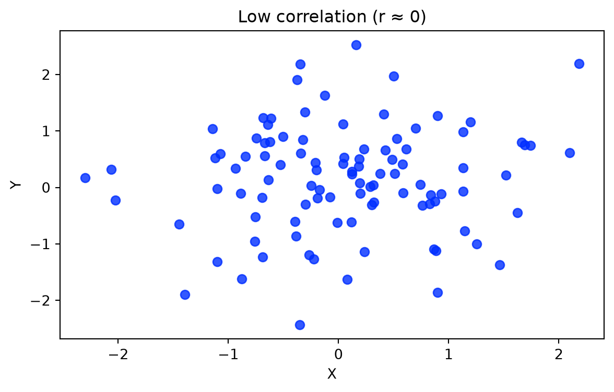
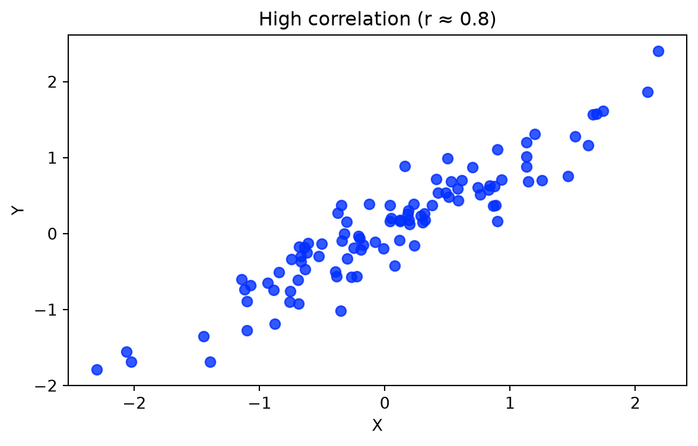
Correlation: Two data series behave “similar”
Causality: Principle of cause and effect
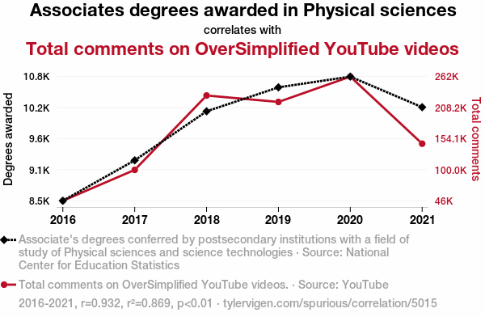
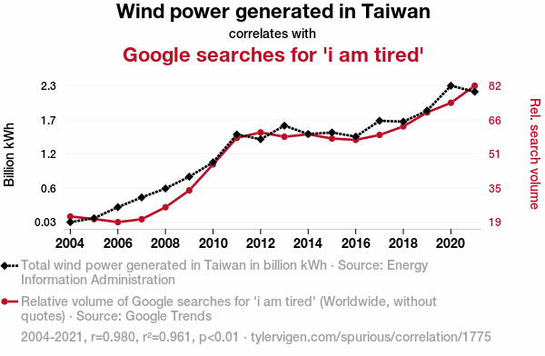
In multivariate exploratory data analysis, we often want to understand whether observations form natural groups.
Clustering is an EDA technique that groups similar observations based on their characteristics.
Common use cases include:
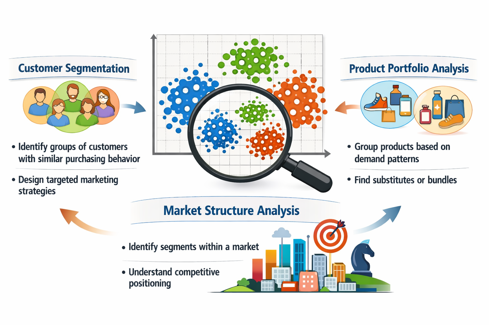
Clustering algorithms can be grouped into several families of approaches.
| Family | Examples | Key characteristics |
|---|---|---|
| Segmentation / Partitioning methods | k-means, k-medoids (PAM), bisecting k-means | divide observations into k predefined clusters; scalable for large datasets; widely used for business/customer segmentation |
| Hierarchical methods | Agglomerative clustering, divisive clustering | clusters formed through successive merging or splitting; produce dendrograms (cluster trees); useful for exploratory structure discovery |
| Density-based methods | DBSCAN, HDBSCAN | clusters defined as regions of high density; identify arbitrary shapes and outliers/noise |
| Probabilistic / model-based methods | Gaussian mixture models | clusters modeled as probability distributions; allow soft cluster membership when groups overlap |
In this lecture we focus on k-means (segmentation) and agglomerative hierarchical clustering.
Segmentation methods divide observations into k clusters.
Goal:
The most widely used algorithm:
k-means clustering
Key assumption:
clusters are roughly spherical and similar in size.
For a given k, the algorithm finds cluster centers that minimize within-cluster sum of squares.
Steps:
Strengths: fast and scalable, easy to interpret
Limitations: must choose k, sensitive to scaling and outliers.
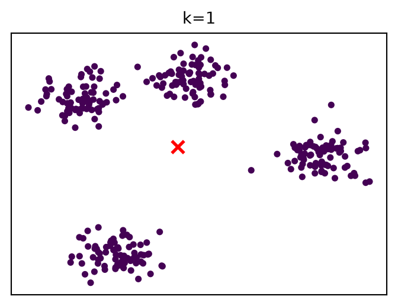
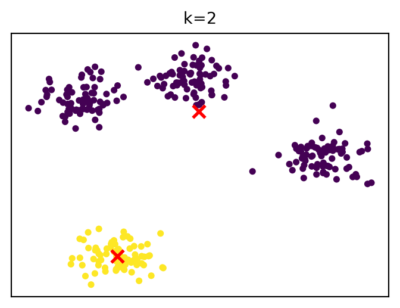
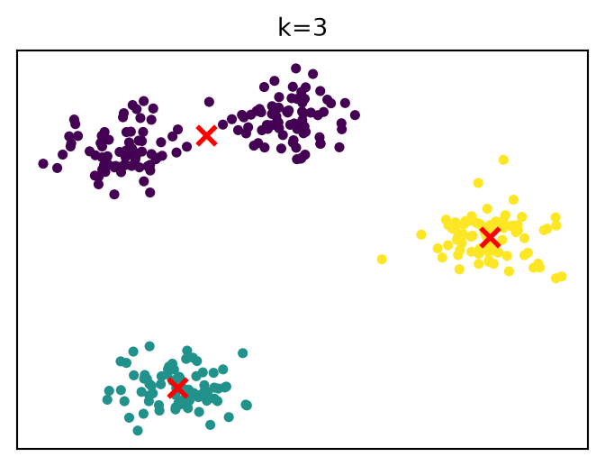
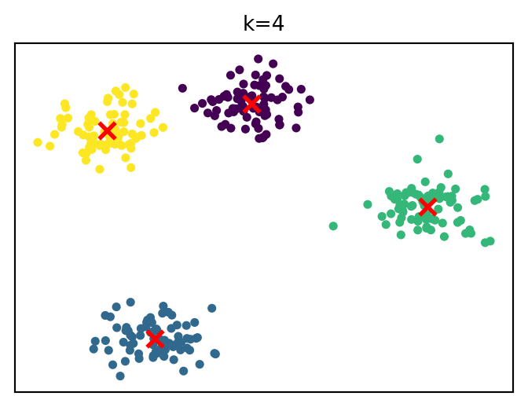
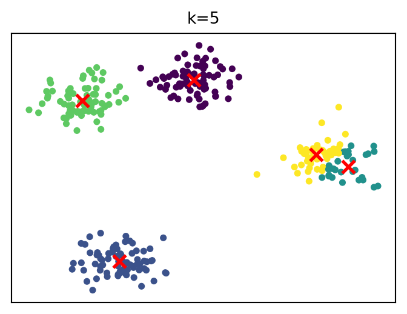
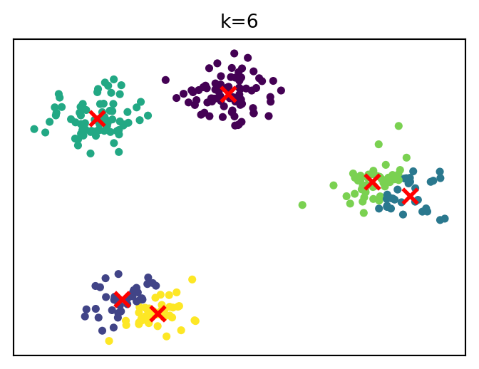
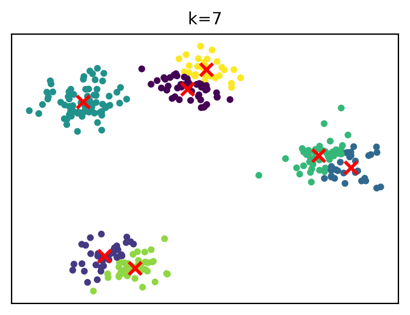
…
The following runs a k-means clustering analysis in Python:
KMeans(...) + fit_predict(X) runs the iterative algorithm we saw earlier:
It returns an array of cluster labels (corresponding to each observation). . . .
X must have a specific structure, as discussed in data preparation:
Example:
A common heuristic is the elbow method.
Idea:
Example metric: within-cluster variance (inertia)
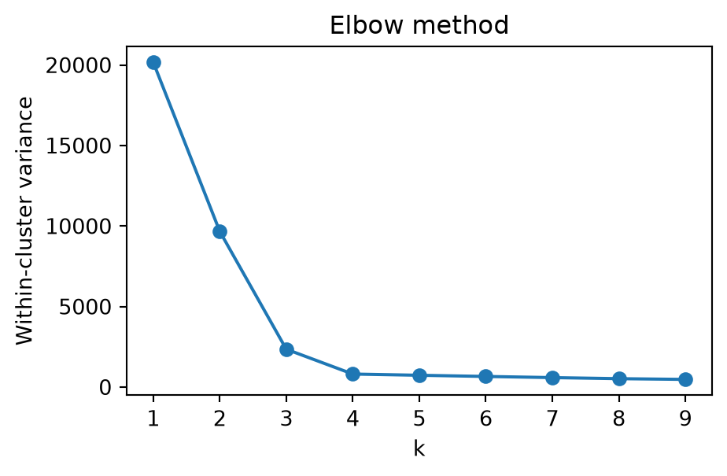
Choose k at the “elbow” (diminishing returns)
An alternative is the silhouette score.
Idea:
Choose k that maximizes the score
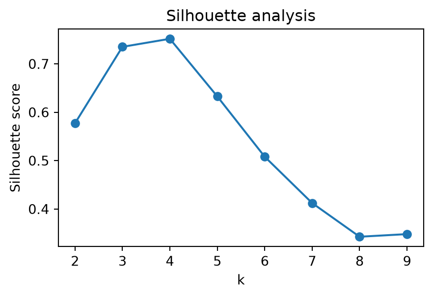
Higher = better separation and compactness
Hierarchical clustering builds a tree of clusters.
There are two types of hierarchical cluster methods:
A dendrogram is a tree diagram frequently used to illustrate the arrangement of the clusters produced by hierarchical clustering. The y-axis represents the value of this distance metric (e.g. euclidean distance) between the clusters.
In a dendrogram the widths of the horizontal lines give an impression about the dissimilarity of the merging object. Thus, a good cluster number might be at a point from where the width of the following horizontal lines is significantly smaller in length.
This allows us to explore clusters at multiple levels of granularity.
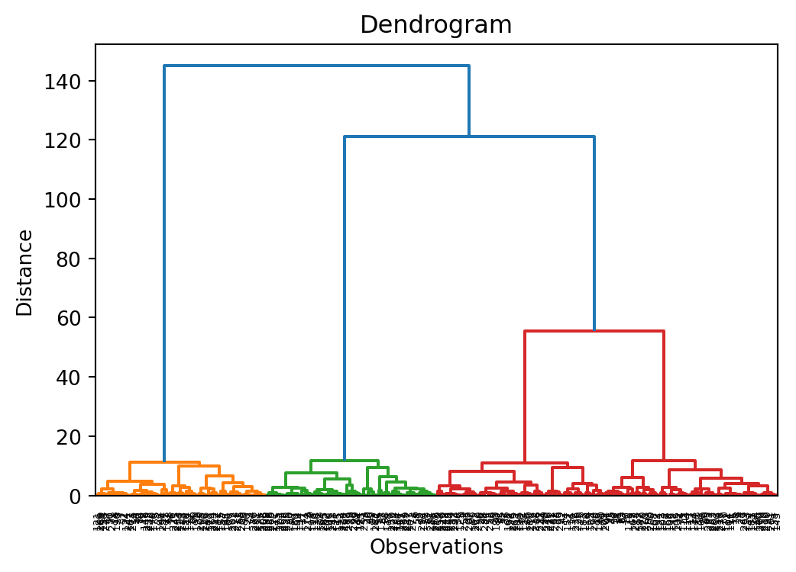
When merging clusters, we must define distance between clusters.
Common linkage choices:
single linkage
complete linkage
average linkage
Ward linkage
⚠ Clustering algorithms will always produce groups, even when no meaningful structure exists.
Therefore clusters must be evaluated.
Common evaluation approaches include:
internal validation
external validation
interpretability checks
Clustering often supports later analytical steps.
For example:
Customer segments in data warehouses
Heterogeneity in regression models
Machine learning pipelines
Hypothesis generation and model development
Exploratory Data Analysis (EDA) helps us understand data before modeling.
Key steps: